AI automation and UX/UI · Sydney
Adrian Jobse
I design and build production tools for InDesign, Photoshop and Figma, and apps for Mac, iPhone and Apple Watch, drawing on 26 years across finished art, design and advertising.
I draw the icons, design the interfaces and build the tools with Claude Code.

- 6
- plugins published on Adobe Exchange and Figma Community
- 1
- Mac app in development, Ad Agent
- 26 yrs
- across finished art, design and advertising
- 11 yrs
- at BMF, leading campaign production and website management
UX/UI & branding
Icons, logos and screens I designed for my own apps and plugins.
Ad Agent widgets
The widget set for Ad Agent's tags, files and sizes, and the New tag panel where three of them are used.
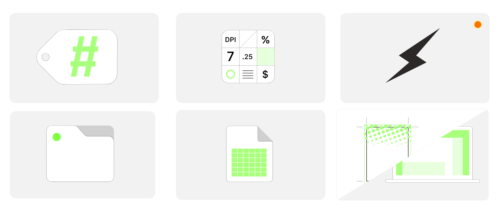
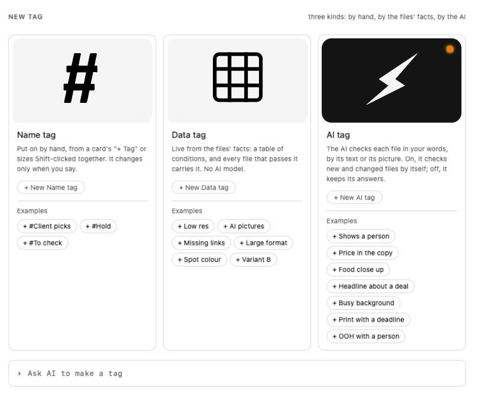
App and plugin icons


One Percent
A gym tracker for iPhone, iPad and Apple Watch: the app icon, the 1% logo, the marks for what it tracks, and the screens.

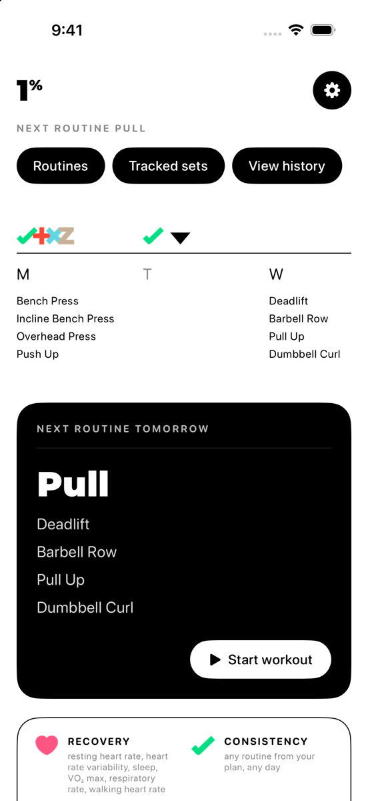

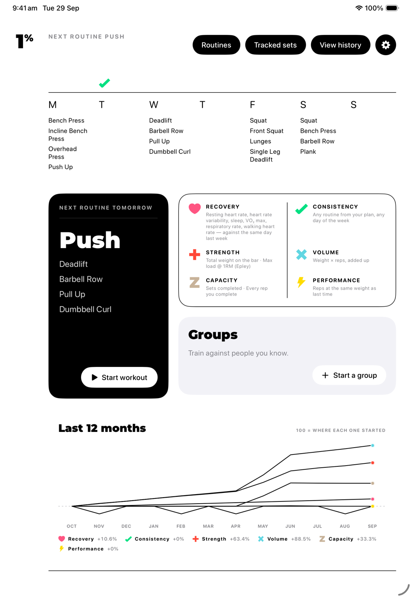

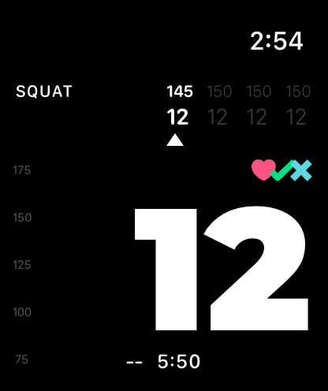

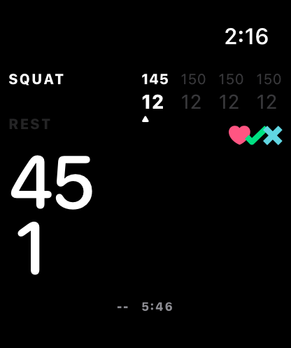

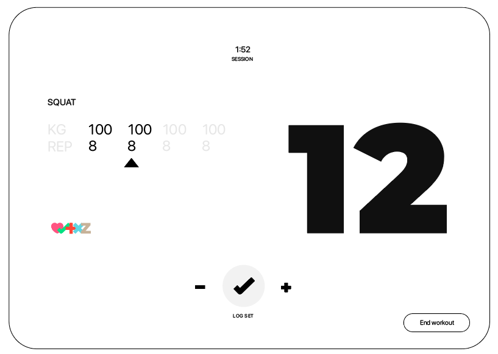

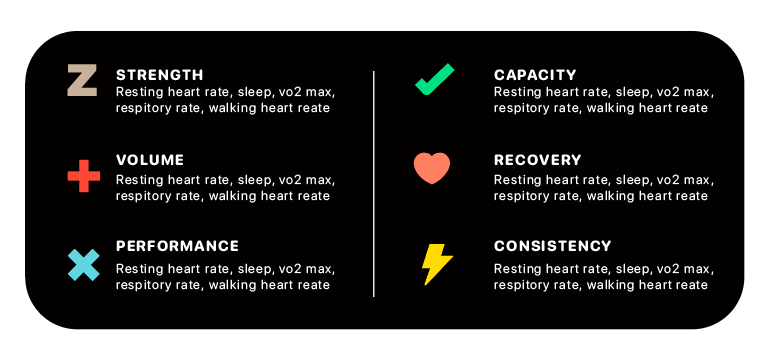

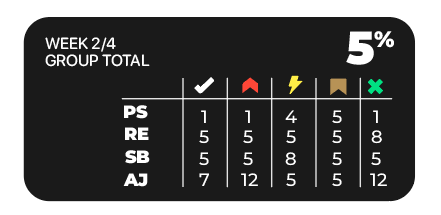

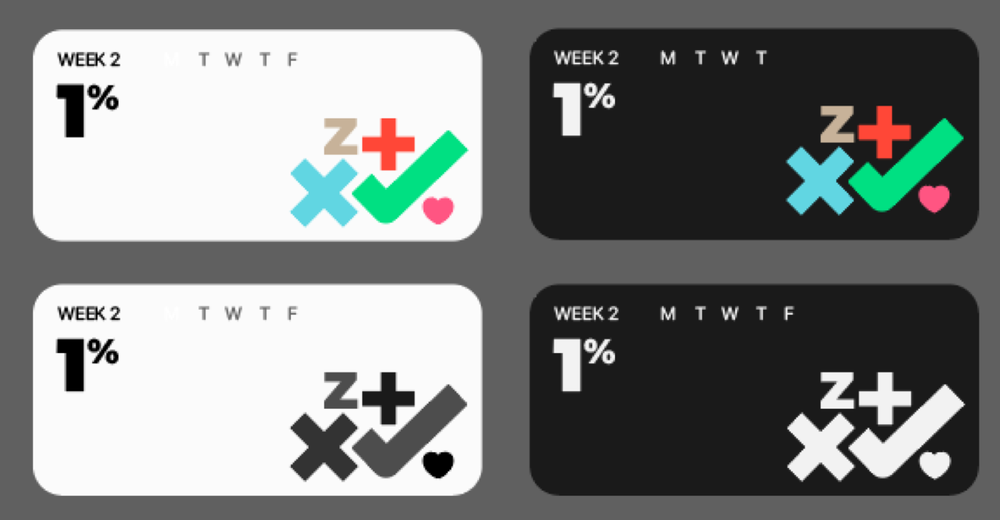
Plugin title cards

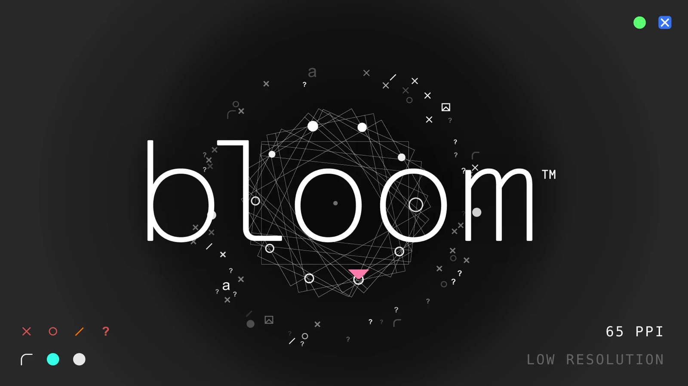

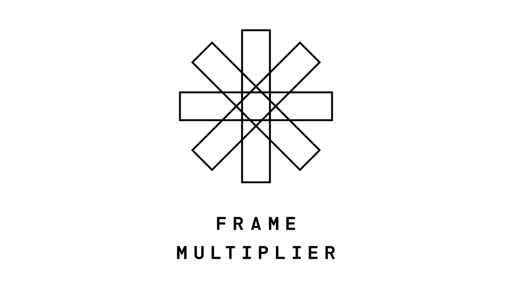
Published plugins
Six plugins, published on Adobe Exchange and Figma Community.
- InDesign Automated Assemblr Builds catalogue pages from an Excel brief and folders of images, and keeps the pages and the brief in sync both ways.
-
 InDesign
Assemblr
Arranges images inside one frame and lines cut-outs up by their visible edges. Resize the frame and the layout follows.
InDesign
Assemblr
Arranges images inside one frame and lines cut-outs up by their visible edges. Resize the frame and the layout follows.
-
Photoshop
Assemblr for Photoshop
The same arrangements on Photoshop layers, with every layer left editable.
- Figma Frame Multiplier Builds every size of a campaign from a handful of master layouts.
- Figma IDML Export Rebuilds Figma frames as IDML files for InDesign, with CMYK, bleed and paragraph styles.
-
 Figma
Bloom
Preflight for Figma frames: low-res images, off-pixel positions, detached instances and raw colours.
Figma
Bloom
Preflight for Figma frames: low-res images, off-pixel positions, detached instances and raw colours.
In development: Ad Agent
- From the briefIt reads the brief and builds every size from the InDesign and Figma masters.
- AmendsEach round of amends is kept, and every size is tagged with its creative, channel and tool.
- OutputEach channel runs its own InDesign Preflight profile and PDF preset, including a printer's .joboptions file, and approved files go to the right folders.
- SafetyIt works on copies and never edits the originals. Its AI changes only what the user allows.
How I use AI in production
I use AI on real production problems, inside the apps the studio already runs.
- Agentic developmentClaude Code with project rules, skills, hooks and memory, with several AI sessions working in parallel on InDesign, Photoshop and Figma tools.
- Briefs and schedulesTurning a brief or media schedule into the list of channels, sizes and files to make.
- Working in the appsAgents that work inside InDesign and Figma through their own plugin APIs, on copies of the files.
- Product and price dataExcel briefs cleaned and matched to images by product code before anything reaches a layout.
- CheckingPreflight in Figma and per-channel preflight in InDesign, so errors are found before a person checks the files.
- Where it stopsAI takes on the repetitive work. Layout judgement, client amends and the final check stay with a finished artist.
Tools and languages
- Claude CodeDaily use
- TypeScriptPlugins and apps
- UXPInDesign and Photoshop plugins
- Figma plugin APIFigma plugins
- Python and pandasBrief and data handling
- APIs and local AI modelsIntegrations and testing
- iOS appsBuilt with Claude Code
- GitHubVersion control and publishing
Experience
-
2015 – 2026
Finished Artist & CMS Lead · BMF, Sydney
Part of Enero Group. Finished art and studio leadership on ALDI Australia, across out of home, digital, social and print. Finished in August 2026.
-
2011 – 2014
Finished Artist · McCann/SMART Inc, Sydney
Full-time, September 2011 to August 2014. Clients: Oporto, Uncle Tobys, Nespresso, Suzanne Grae, Mastercard and Cathay Pacific.
-
2009 – 2010
Finished Artist · The Foundry, Sydney
Full-time, July 2009 to July 2010. Clients: Barbeques Galore, Oporto and Fantastic Furniture.
-
2009
Freelance Finished Artist
M&C Saatchi, May to July 2009: Westfield and Myer.
Moon Communications Group, August to November 2009: 3 Mobile and Sunglass Hut.
-
2004 – 2009
Freelance Designer · Freelance Prepress · Fresh Artwork
Freelance design and prepress, including afternoon shifts in prepress at Sony and bookings at Sydney agencies.
-
2003
Prepress trade qualification · Hannapak
Where I learnt print production, colour and artwork preparation.
Contact
Available for freelance work on production tools, automation and UX/UI, on site in Sydney or remote.